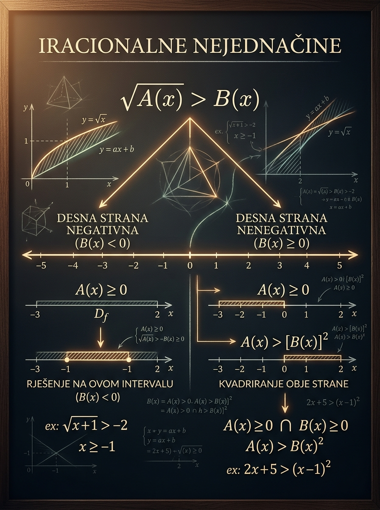

Naučićeš
Kako da razdvojiš zadatak na prave slučajeve
Automatski tačan, automatski nemoguć i slučaj u kome je kvadriranje dozvoljeno.
Ova lekcija je jedna od poslednjih ozbiljnih provera algebarske zrelosti pred prijemni. Ključ nije u tome da umeš da kvadriraš, nego da znaš kada smeš. Čim vidiš \( \sqrt{A(x)} \,\square\, B(x) \), prvi posao nije računanje nego logičko grananje po znaku desne strane.
Automatski tačan, automatski nemoguć i slučaj u kome je kvadriranje dozvoljeno.
Time se briše logička razlika između grana i nastaje pogrešan skup rešenja.
Domena i znak desne strane često rešavaju pola posla pre nego što krene algebra.

Ovo je lekcija koju vredi učiti sporije, jer jedan dobar mentalni model štedi mnogo poena na ispitu.
Treba da umeš domenu korena, kvadriranje uz uslov i rešavanje kvadratnih nejednačina.
Da tačno prepoznaš kad negativna desna strana pomaže, a kad odmah isključuje rešenja.
Menjaš parametre i odmah vidiš domenu, obe grane i skup rešenja na brojevnoj pravoj.
Iracionalne nejednačine deluju kratko, ali su suštinski logički zadaci. Ispitivač ne proverava samo da li umeš da kvadriraš, već da li razumeš da je \( \sqrt{A(x)} \) uvek nenegativno i da zbog toga znak izraza \( B(x) \) menja čitav tok rešenja.
Isti refleks ti kasnije treba kod logaritama, domena funkcija, parametarskih zadataka i analize grafika. Ko ovde stekne disciplinu, pravi manje grešaka u svakoj sledećoj oblasti.
Kandidat često odmah kvadrira, dobije urednu kvadratnu nejednačinu i potpuno pogrešan odgovor. Zato je ova tema odličan filter: odvoji pažljivog učenika od onog koji radi mehanički.
Upravo ta promena logike razlikuje iracionalne nejednačine od većine rutinskih zadataka. Kada to jednom vidiš jasno, cela oblast postaje mnogo preglednija.
Ako ti zadatak deluje haotično, vrati se na jedno pitanje: kakav je znak desne strane? U većini iracionalnih nejednačina upravo to pitanje rešava najteži deo problema.
U ovoj lekciji najčešće posmatramo kvadratni koren, jer je on dominantan na prijemnim ispitima. Za opšti oblik \( \sqrt{A(x)} \,\square\, B(x) \) prvo moraš da poštuješ dve činjenice: radikand mora biti nenegativan, a cela leva strana je tada takođe nenegativna.
To je nejednačina u kojoj se nepoznata javlja pod korenom, na primer \( \sqrt{x+1}\ge x-1 \), \( \sqrt{x+4}<x+2 \) ili \( \sqrt{2x+3}\le 5-x \).
Kada je koren definisan, važi \( \sqrt{A(x)}\ge 0 \). Zato je znak izraza \( B(x) \) presudan: ako je \( B(x)<0 \), poređenje sa nenegativnim brojem ne izgleda isto kao kada je \( B(x)\ge 0 \).
Za znakove \(>\) i \(\ge\) negativna desna strana obično pomaže. Za znakove \( < \) i \(\le\) negativna desna strana obično ubija rešenja.
Ako rešavaš \( \sqrt{A(x)}\ge -3 \) ili \( \sqrt{A(x)}>-3 \), tada je nejednačina tačna za sve \( x \) iz domene, jer je leva strana nenegativna. Ako rešavaš \( \sqrt{A(x)}\le -3 \) ili \( \sqrt{A(x)}<-3 \), tada nema rešenja, jer nenegativan broj ne može biti manji ili jednak negativnom broju.
Najsigurniji način rešavanja iracionalnih nejednačina jeste da uvek radiš istim redom. Tako izbegavaš najveću opasnost ove oblasti: da kvadriraš pre nego što znaš da li je to logički dozvoljeno.
Za kvadratni koren prvo mora važiti \( A(x)\ge 0 \). Ovo nije ukrasni uslov. Bez njega levi član uopšte nije definisan.
Ispitaj posebno gde je \( B(x) \) negativan, nenegativan, odnosno pozitivan kada je potrebna stroga nejednakost. Tu se krije glavni logički prekid.
Kvadriranje je dozvoljeno samo kada znaš da obe strane imaju pravi znak za poređenje. Tada nejednačinu svodiš na oblik bez korena.
Najčešće dobijaš kvadratnu nejednačinu. Reši je, a zatim uradi presek sa uslovima grane u kojoj si radio.
Jedna grana može biti automatski tačna, druga dati intervale posle kvadriranja. Konačno rešenje je njihova unija, ne rezultat samo jedne od njih.
Ako je \( B(x)<0 \), leva strana je automatski veća jer je nenegativna.
Tačka \( B(x)=0 \) pripada drugoj grani, gde proveravaš da li je \( A(x)\ge 0 \).
Za strogo manje mora važiti \( B(x)>0 \), jer broj manji od nule ne može biti iznad korena.
Ako je \( B(x)<0 \), nema rešenja. Ako je \( B(x)=0 \), moguće je samo kada je i koren jednak nuli.
To je najvažniji uvid ove lekcije. Kvadriranje nije prvi korak, nego treći: dolazi tek pošto domena i znak desne strane budu potpuno razjašnjeni.
Učenik koji razume logiku grana retko greši. Učenik koji pamti samo algebarski obrazac često izgubi upravo one lake poene koje je mogao sigurno da osvoji.
Zato što je leva strana nenegativna. Ako bi važilo \( B(x)=0 \), onda bi nejednačina bila \( \sqrt{A(x)}<0 \), što je nemoguće. Zato je za strogu nejednakost potrebno da desna strana bude strogo pozitivna.
Ovaj model nije cela teorija, ali je odličan trening za ono što je najvažnije: domen, znak desne strane i kvadratna nejednačina u drugoj grani. Menjaj parametre i prati kako se menja skup rešenja na brojevnoj pravoj.
Model koristi \( \sqrt{x+p} \). Veći \( p \) pomera početak domene ulevo.
Desna strana je \( x+q \). Njena nula određuje gde se logika zadatka lomi.
Menjaj znak i posmatraj kako negativna desna strana prelazi iz pomoći u prepreku.
Preseti služe da brzo vidiš različite tipove zadataka i način grananja.
Napomena: ova laboratorija rešava tačno model \( \sqrt{x+p}\,\square\,(x+q) \). Za opšti oblik \( \sqrt{A(x)}\,\square\,B(x) \) koristi istu logiku, ali račun u drugoj grani može biti složeniji.
Svaki primer je napisan tako da prati način razmišljanja koji želiš da razviješ: domena, grane, kvadriranje samo tamo gde sme, pa onda presek i unija. Nemoj preskakati objašnjenja između redova, jer su upravo ona ono što na prijemnom donosi sigurnost.
Ovo je najvažniji početni model: jedna grana je automatski tačna, a druga vodi na kvadratnu nejednačinu.
Mora važiti \( x+1\ge 0 \), pa je \( x\ge -1 \).
Tada je \( x<1 \). Pošto je leva strana nenegativna, nejednačina \( \sqrt{x+1}\ge x-1 \) je automatski tačna na celoj domeni te grane.
Tada smeš da kvadriraš, jer upoređuješ dve nenegativne strane:
Ali ova grana još traži \( x\ge 1 \), pa dobijaš \( x\in [1,3] \).
Konačno rešenje je
Obrati pažnju: tačka \( x=1 \) nije došla iz prve, nego iz druge grane. Zato granice uvek prati pažljivo.
Ovaj tip zadatka je odličan za učenje razlike između \( \ge \) i \( < \).
Iz domene dobijaš \( x\ge -4 \). Ali za strogo manje mora važiti i \( x+2>0 \), odnosno \( x>-2 \).
Sada obe strane imaju pravi znak za kvadriranje:
Od ranije imaš \( x>-2 \), pa interval \( (-\infty,-3) \) otpada. Ostaje samo
Ovo je dobar primer zašto sama domena nije dovoljna. Prava prepreka je bio uslov da desna strana mora biti strogo pozitivna.
Ovde nema automatski tačne grane. Čim desna strana nije nenegativna, zadatak propada.
Iz domene sledi \( x\ge -5 \), a iz oblika \( \le \) mora važiti i \( x+1\ge 0 \), tj. \( x\ge -1 \).
Nule su \( \displaystyle x_{1,2}=\frac{-1\pm\sqrt{17}}{2} \), pa kako je koeficijent uz \(x^2\) pozitivan, važi
Prvi interval otpada, jer je ceo levo od \(-1\). Ostaje
Ovo je tipičan ispitni obrazac: učenik koji zaboravi uslov \( x+1\ge 0 \) često pogrešno zadrži i prvi interval.
Prijemna verzija sa opštijom linearnom desnom stranom. Logika je ista, samo je račun u drugoj grani jači.
Važi \( x+6\ge 0 \), pa je domena \( x\ge -6 \).
Dobijaš \( x<\frac12 \). Pošto je leva strana nenegativna, u ovoj grani je nejednačina automatski tačna.
Sada smeš da kvadriraš:
Koreni su \( \displaystyle \frac{5\pm\sqrt{105}}{8} \), pa važi
Kako ova grana još traži \( x\ge \frac12 \), dobijaš
Ovakav primer pokazuje da logika grana ostaje ista i kad algebra u drugoj grani postane ozbiljnija.
U prvom primeru tačka \( x=1 \) je granica između dve grane. Nije pripadala automatski tačnoj grani \( x<1 \), ali je pripala drugoj grani jer tada postaje \( \sqrt{2}\ge 0 \). Upravo zato granica znaka desne strane nikada ne sme da se preleti bez razmišljanja.
Ove formule nisu za slepo pamćenje, nego za brzo podsećanje na logiku. Ako ih razumeš, svaki novi zadatak svodiš na isti kostur.
Ako ovo ne napišeš, ostatak rešenja nema čvrst temelj.
Naravno, samo na domeni korena.
Za strogo manje čak ni \( B(x)=0 \) nije dovoljno.
Ovaj prelaz ne važi samostalno, već samo uz odgovarajući uslov na \( B(x) \).
Jedna grana može biti prazna, ali to moraš videti, ne pretpostaviti.
Ako ti dobijeni interval deluje sumnjivo velik ili neobično lep, proveri da li si možda rešio samo kvadratnu nejednačinu posle kvadriranja, a zaboravio uslove grane.
Ne pokušavaj da ove greške "ne praviš". Bolje je da ih jasno vidiš i da unapred znaš kako ih sprečavaš dok radiš zadatak.
Ovo je najopasnija i najčešća greška. Time mešaš automatski tačne i nemoguće slučajeve sa granom u kojoj smeš da kvadriraš.
Kod strogih i nestrogih nejednakosti granica nije ista. Posebno pazi na razliku između \( B(x)>0 \) i \( B(x)\ge 0 \).
Posle kvadratne nejednačine dobiješ intervale, ali oni još nisu konačni. Moraš da ih presečeš sa domenom i uslovom znaka desne strane.
Unutar jedne grane radiš presek uslova. Na kraju različite grane spajaš unijom. Mešanje ova dva koraka potpuno menja rezultat.
Domena govori samo gde koren postoji. Za poređenje sa desnom stranom često je važniji uslov da ta desna strana bude pozitivna ili nenegativna.
Ako dobiješ rešenje na delu prave gde je desna strana negativna, a rešavao si oblik \( \sqrt{A(x)}<B(x) \), odmah zastani. Tu je gotovo sigurno nastala logička greška.
Na prijemnom ne dobijaš poene za dužinu rešenja, nego za tačnost. Zato je cilj da razviješ kratku, stabilnu rutinu koja sprečava tipične padove koncentracije.
1. Koja je domena korena?
2. Gde je desna strana negativna, nenegativna ili pozitivna?
3. Da li imam automatski tačnu ili automatski nemoguću granu?
4. U kojoj grani zaista smem da kvadriram?
5. Da li sam na kraju spojio grane unijom?
Napiši domenu u prvom redu. Odmah ispod razdvoji slučajeve po znaku desne strane. Tek u sledećem redu kvadriraj odgovarajuću granu. Ovaj raspored deluje uredno i tebi i onome ko gleda rešenje.
Najčešće gubljenje vremena nastaje kada tri reda računa uradiš pogrešno, pa tek onda shvatiš da je cela grana bila nemoguća. Zato je pravilan prvi minut važniji od brzog drugog minuta.
Prepiši sebi u glavi: koren je nenegativan, zato prvo gledam desnu stranu. To je dovoljno kratko da radi i kad koncentracija padne pred kraj testa.
Pokušaj prvo samostalno. Rešenje otvori tek kada jasno napišeš domenu i grane. Cilj nije samo konačan interval, nego uredan i logičan postupak.
Domena je \( x\ge -2 \).
Prva grana: \( x<0 \). Tada je nejednačina automatski tačna na domeni, pa daje \( [-2,0) \).
Druga grana: \( x\ge 0 \). Kvadriranjem dobijaš \( x+2\ge x^2 \), odnosno \( x^2-x-2\le 0 \), pa \( x\in[-1,2] \). Presek sa \( x\ge 0 \) daje \( [0,2] \).
Konačno: \( [-2,0)\cup[0,2]=[-2,2] \).
Domena je \( x\ge -1 \). Za znak \( < \) mora važiti \( x+1>0 \), dakle \( x>-1 \).
Kvadriranjem: \( x+1<(x+1)^2 \). Neka je \( t=x+1>0 \). Dobijaš \( t<t^2 \), odnosno \( t(t-1)>0 \). Pošto je \( t>0 \), sledi \( t>1 \).
Zato je \( x+1>1 \), pa je rešenje \( x>0 \).
Domena je \( 2x+5\ge 0 \), pa \( x\ge -\frac52 \). Uslov \( x+4\ge 0 \) je slabiji, jer je već ispunjen na toj domeni.
Kvadriranjem dobijaš \( 2x+5\le (x+4)^2=x^2+8x+16 \), pa \( x^2+6x+11\ge 0 \).
Pošto je \( x^2+6x+11=(x+3)^2+2>0 \) za svako realno \( x \), druga nejednačina je uvek tačna.
Zato je konačno rešenje cela domena: \( \left[-\frac52,\infty\right) \).
Domena je \( 3-x\ge 0 \), pa \( x\le 3 \).
Pošto je desna strana pozitivna, nema potrebe za grananjem. Kvadriranjem dobijaš \( 3-x>1 \), odnosno \( x<2 \).
Presek sa domenom daje \( (-\infty,2) \).
Domena: \( x\ge -5 \). Pošto je znak \( \le \), mora važiti i \( 2-x\ge 0 \), tj. \( x\le 2 \).
Kvadriranjem: \( x+5\le (2-x)^2=x^2-4x+4 \), pa \( x^2-5x-1\ge 0 \).
Nule su \( \displaystyle \frac{5\pm\sqrt{29}}{2} \), pa je rešenje kvadratne nejednačine \( x\le \frac{5-\sqrt{29}}{2} \) ili \( x\ge \frac{5+\sqrt{29}}{2} \).
Sa uslovom \( -5\le x\le 2 \) ostaje \( \displaystyle \left[-5,\frac{5-\sqrt{29}}{2}\right] \).
Zato što znak \( < \) zahteva da desna strana bude strogo pozitivna. Ako je \( x-2\le 0 \), nejednačina je nemoguća, pa nema šta da se kvadrira. Tek kada izdvojiš granu \( x>2 \), ima smisla preći na \( x+1<(x-2)^2 \).
Ako pamtiš samo jednu rečenicu iz ove lekcije, neka bude: prvo znak desne strane, pa tek onda kvadriranje.
Kada zatvoriš ovu lekciju, cilj nije da znaš napamet deset obrazaca, već da imaš jednu stabilnu proceduru koja radi i u lakim i u teškim zadacima.
Kvadratni koren postoji samo kada je radikand nenegativan. Bez te prve linije nema smislenog rešenja.
Za \(>\) i \(\ge\) negativna desna strana pomaže. Za \( < \) i \(\le\) negativna desna strana obično uklanja rešenja.
Ne kvadriraš napamet. Najpre odlučiš u kojoj grani to smeš da uradiš, pa tek onda rešavaš kvadratnu nejednačinu.
Rezultat dobijen posle kvadriranja nije konačan dok ga ne presečeš sa domenom i uslovom znaka desne strane.
Jedna grana može biti prazna, druga dati interval. Konačno rešenje dobijaš tek kada ih spojiš kako treba.
Ako ovu proceduru usvojiš sada, bićeš mnogo sigurniji i kod logaritamskih nejednačina i kod težih parametarskih zadataka.